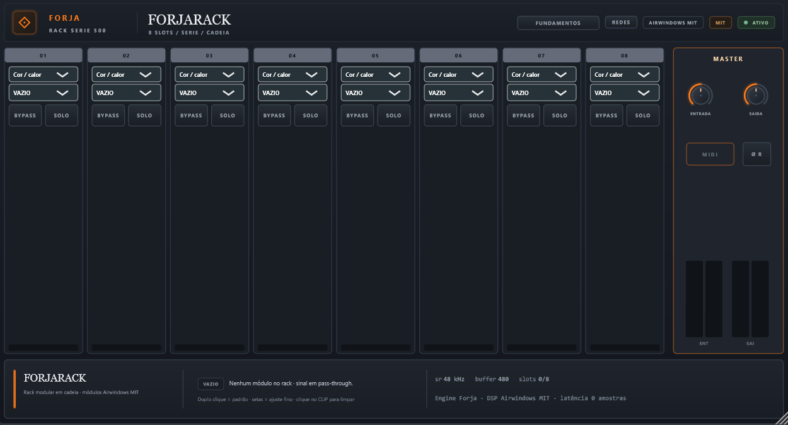
ForjaRack
disponívelOito gavetas em cadeia: encaixe modulos Airwindows e monte uma fileira completa sem sair de um unico plug-in.
Ferramentas de estúdio feitas uma por uma, com a mesma interface de ferro e brasa: o rack de oito gavetas, os instrumentos de gaveta, o sampler de bateria e trinta e um plugins de mixagem derivados do código MIT de Chris Johnson (Airwindows). Windows, macOS e Linux, VST3.
Engenharia de precisão, respeito à proveniência do DSP e design de estúdio artesanal.
A Forja nasceu da vontade de unir o melhor de dois mundos no áudio digital: a genialidade sônica e matemática dos algoritmos consagrados de Chris Johnson (Airwindows) com uma experiência de uso moderna, confiável, tátil e integrada.
Em vez de interfaces genéricas ou WebViews lentas que consomem memória desnecessária na sua DAW, cada plugin da Forja traz uma interface vetorial nativa acelerada por hardware, com nossa identidade visual de ferro e brasa. Cada detalhe técnico foi refinado: medidores de redução de ganho rápidos, curvas de equalização em tempo real e o exclusivo painel FUNDAMENTOS em português, explicando o comportamento exato de cada controle sem termos inventados.
Além das consagradas ferramentas de mixagem e masterização, a suÃte conta com ecossistemas originais completos: o ForjaRack (rack estilo Série 500 com 8 gavetas encadeáveis), os Minis (instrumentos e processadores compactos focados em velocidade) e o Drumforge (sampler acústico de bateria com round-robin, velocity layers e console dedicada).
Garantia RT-safe em todo o caminho de áudio: sem travamentos, sem garbage collection e sem jitter na sua sessão.
Cada adaptador Airwindows é validado por testes de paridade bit-a-bit (erro máx ≤ 1e-9) contra o código-fonte original MIT.
Crossfade com rampa suave de 10 ms em todos os processadores. Alterne bypass sem cliques ou estalos nos seus monitores.
Cada linha tem trem de release próprio: os instaladores saem de tags separadas
(vrack-, vminis-, vdrumforge-, vairwindows-),
e a suíte continua saindo da tag sem prefixo.

Oito gavetas em cadeia: encaixe modulos Airwindows e monte uma fileira completa sem sair de um unico plug-in.
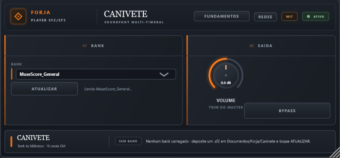
Instrumentos de gaveta: player de soundfont, tocador de kits e saturador de valvula.
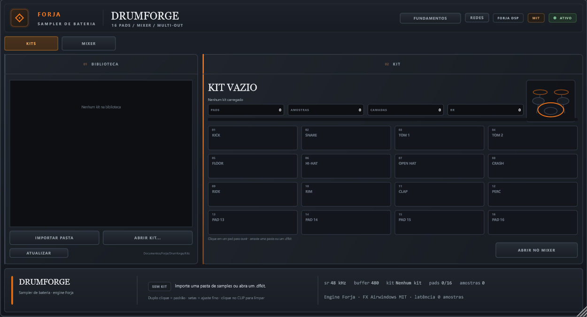
Sampler de bateria com dezesseis pads, round-robin e uma mesa completa.
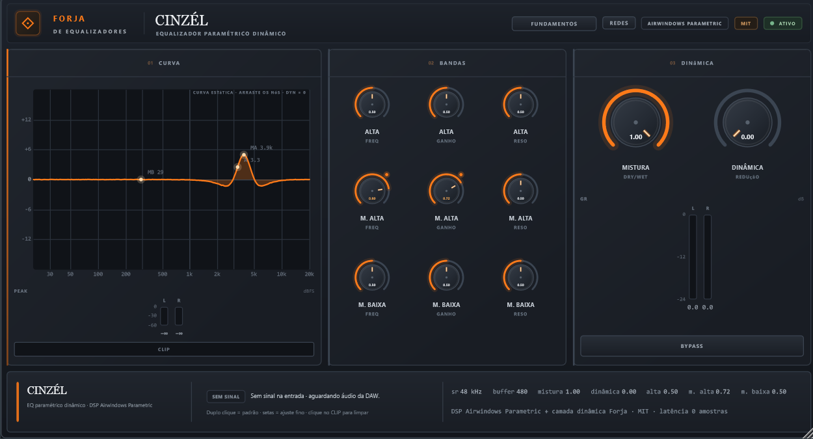
Trinta e um plugins de mixagem derivados do codigo MIT de Chris Johnson, com interface Forja.
RACK SERIE 500
Oito gavetas em cadeia: encaixe modulos Airwindows MIT e monte uma fileira de timbre, dinamica, EQ, ambiente e lo-fi sem sair de um unico plug-in.
PLAYER SF2/SF3
CANIVETE é o player de soundfont da suíte: abre bancos .sf2 (e .sf3 quando o build traz o decodificador Ogg) e toca 16 canais GM pelo MIDI da DAW.
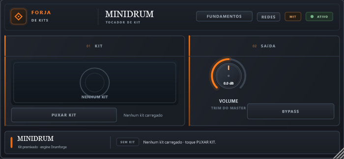
TOCADOR DE KITS
MINIDRUM é o Drumforge em formato de gaveta: puxa um kit da biblioteca compartilhada, toca o premix gravado no próprio arquivo e manda no nível com um único knob.
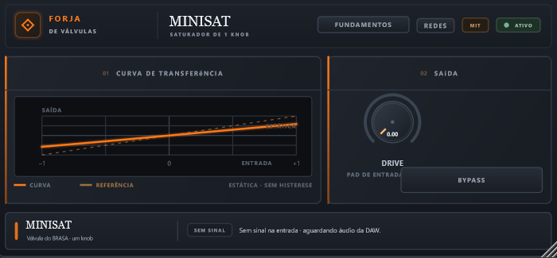
SATURADOR DE VÁLVULAS
MINISAT é a válvula do BRASA (Airwindows Tube2) em formato de gaveta: um único knob DRIVE leva o sinal do pad documentado ao sinal cheio, sem makeup gain e sem mesa de três knobs.
SAMPLER DE BATERIA
Dezesseis pads, camadas de velocidade, round-robin e uma mesa completa: o kit entra, o groove sai. Sem latência e sem depender de biblioteca externa.
EQUALIZADOR PARAMÉTRICO DINÂMICO
Três bandas paramétricas com ressonância musical e uma camada dinâmica opcional que só existe na Forja: esculpe sem estourar.
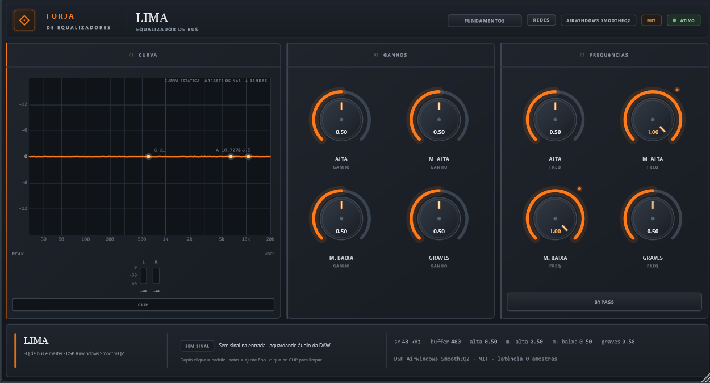
EQUALIZADOR DE BUS
Quatro bandas largas separadas por crossovers suaves, sem saturação: o ajuste que o bus inteiro aceita sem soar mexido.
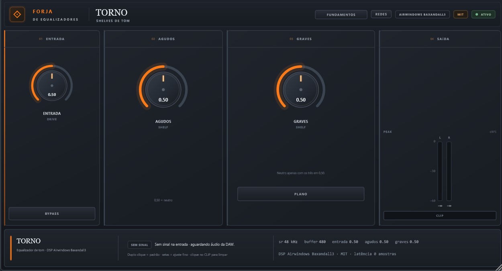
SHELVES DE TOM
Dois shelves Bessel entrelaçados e um estágio de Console: o tom muda de forma contínua, sem degraus e sem dureza.
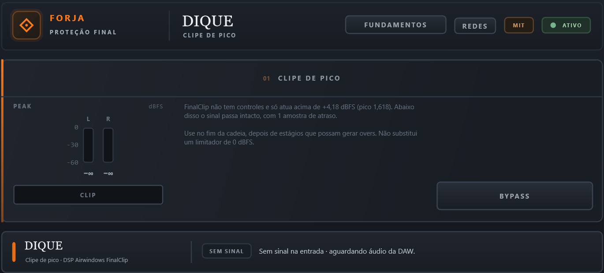
CLIPE DE PICO
A última comporta antes da saída: o FinalClip arredonda picos extremos acima de +4,18 dBFS. Abaixo disso, o sinal passa intacto.
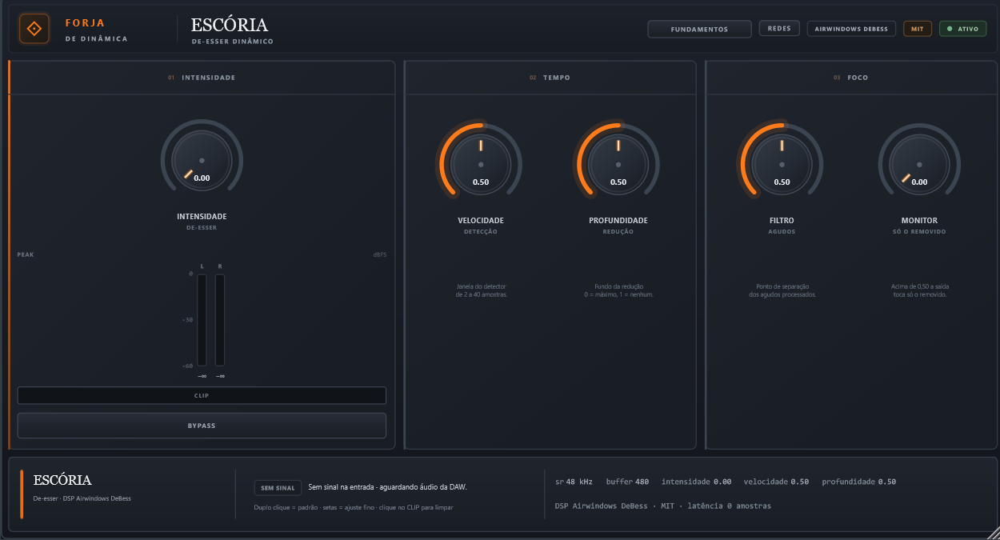
DE-ESSER DINÂMICO
Escória é o resíduo que sobra do metal. Aqui, é o agudo que incomoda: o detector acha os transientes e devolve o resto intacto.
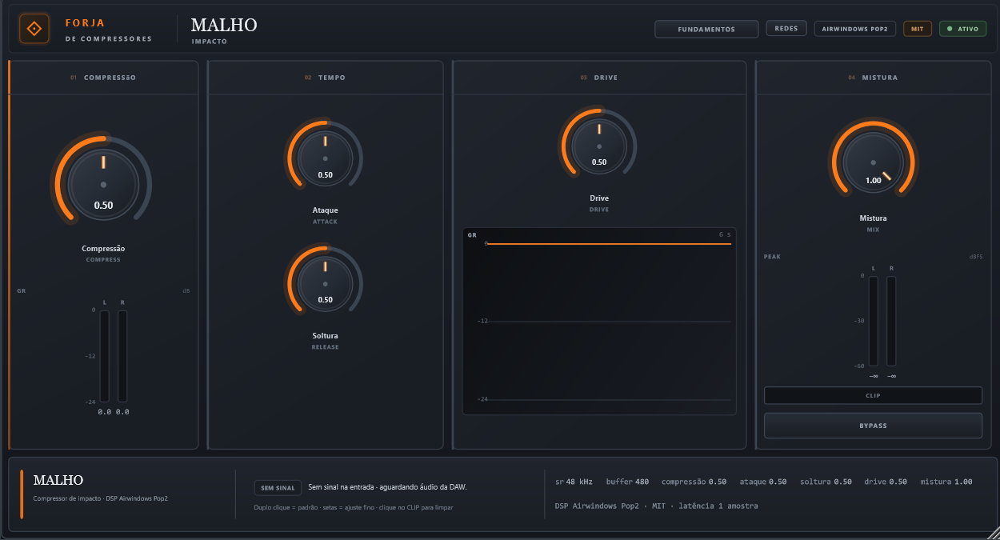
COMPRESSOR DE IMPACTO
Ataque e soltura separados, envelopes independentes por canal e um drive que deixou o sinal na frente. Feito para bateria e bus de impacto.
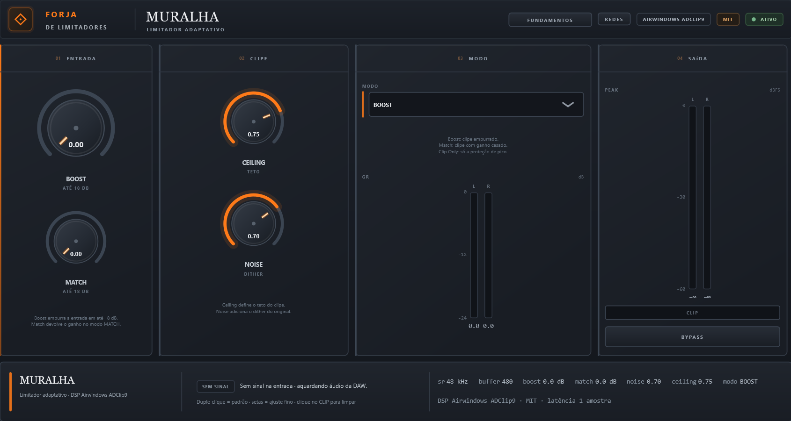
LIMITADOR ADAPTATIVO
Um muro no fim da cadeia: o sinal pode entrar quente, mas o pico sai contido. O ADClip9 adapta o clipe ao movimento do material em vez de usar um teto fixo.
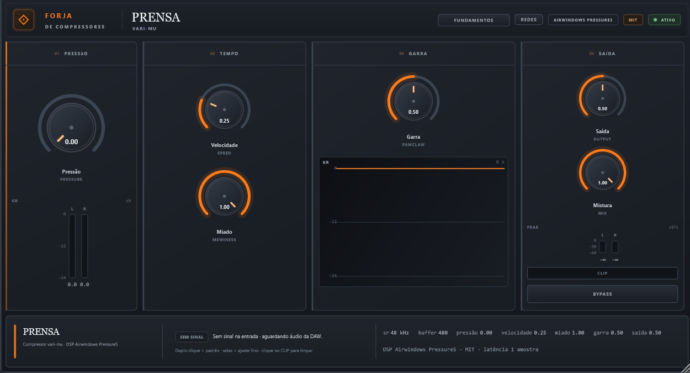
COMPRESSOR VARI-MU
Densidade e caráter vari-mu com detector estéreo linkado. Apressa o sinal sem perder o corpo.
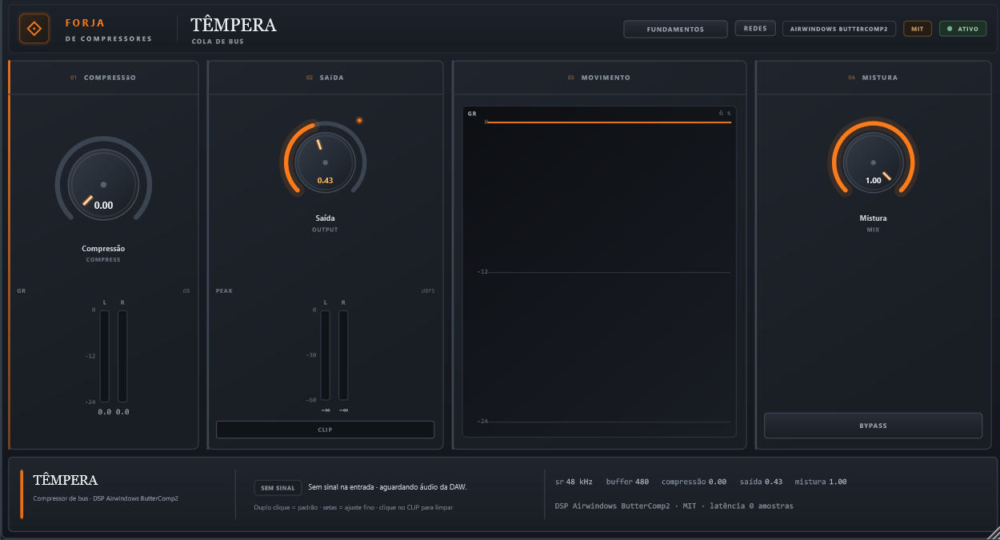
COMPRESSOR DE BUS
Quatro compressores paralelos que se alternam a cada amostra para colar o bus sem apagar o ataque. O movimento é suave e o caráter, musical.
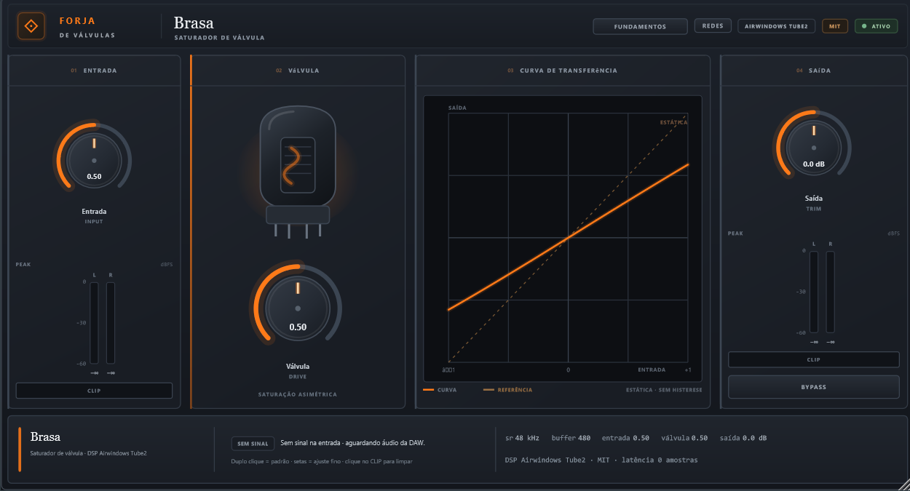
SATURADOR DE VÁLVULA
Um modelador de válvula assimétrico para calor, cola e compressão natural. O sinal ganha peso harmônico sem perder o ataque.
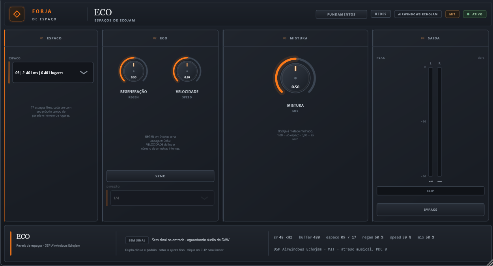
ESPAÇO DE ECO
Eco não é um delay com um tempo: é uma sala inteira. O Echojam desenha dezessete espaços fixos, cada um com seu próprio conjunto de tempos de parede, e o Forja os expõe num só seletor. O atraso é musical, não compensação de latência.
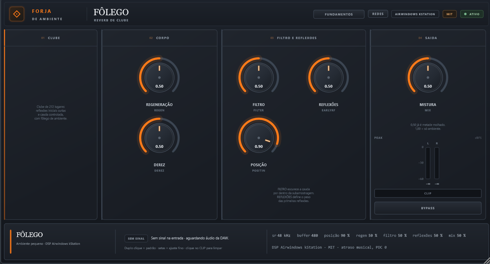
AMBIENTE DE CLUBE
FÔLEGO é o ambiente de um clube de 272 lugares: reflexões iniciais curtas, corpo de seis vias por canal e dois estágios de subamostragem por Bézier. É o par pequeno do SALÃO. O atraso interno é musical, não compensação de latência.
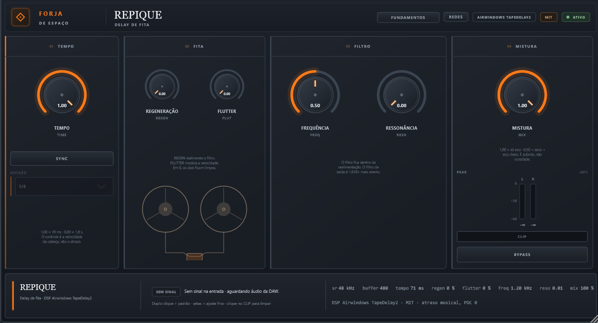
DELAY DE FITA
Repique é o eco de uma máquina de fita: a cópia volta com o filtro do cabeçote, com a velocidade oscilando e com uma regeneração que vira ressonância quando o filtro aperta. O atraso é musical, não compensação de latência.
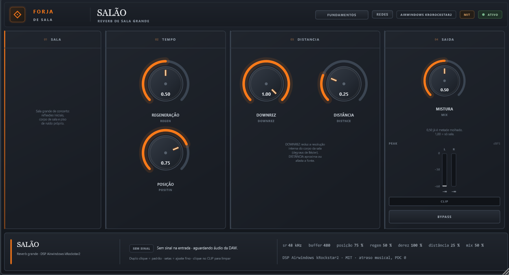
SALA GRANDE
SALÃO é uma sala de concerto, não um reverb de placa. O kRockstar2 junta reflexões iniciais curtas, um corpo de realimentação de seis vias por canal e um piso de ruído de sala. O atraso interno é musical: não há compensação de latência.
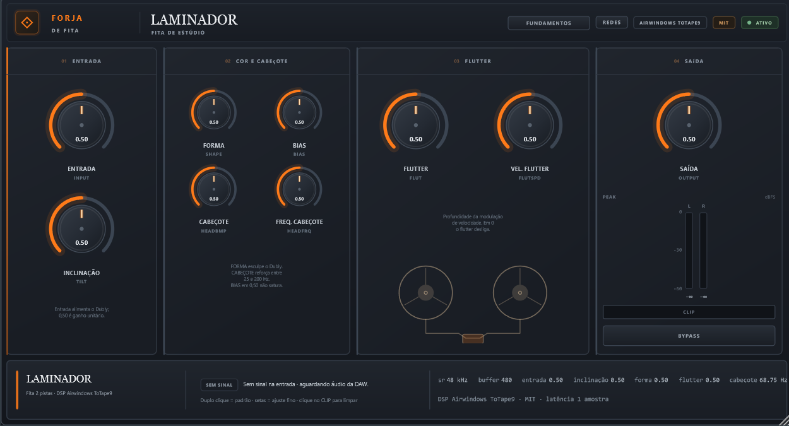
FITA DE ESTÚDIO
Laminar é passar o metal entre cilindros até ele ficar do jeito certo. Aqui, o cilindro é a fita: a entrada ganha corpo, o cabeçote reforça o grave e o flutter move a velocidade como uma máquina real.
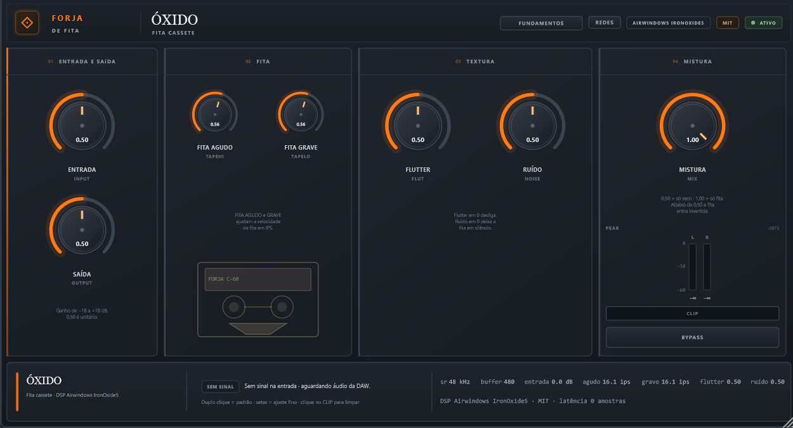
FITA E LO-FI
Óxido de ferro é o que dá cor à fita. Aqui, ele é o grão: velocidade, flutter e ruído constroem a textura, e a mistura pode ir de só seco a só fita, inclusive invertida.
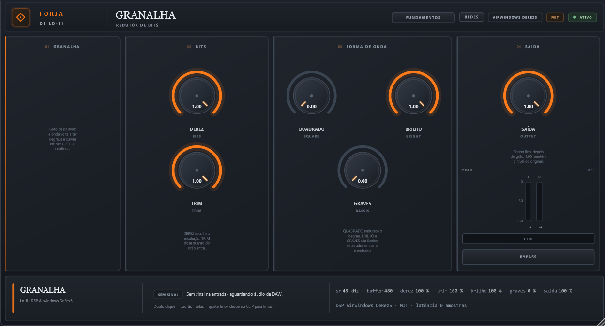
REDUTOR DE BITS
GRANALHA é o grão digital controlado: reduz a resolução da onda, redesenha os degraus em Bézier e deixa o brilho e os graves decidirem onde o lo-fi morde. É o bitcrusher da suíte, feito para sujar sem perder o corpo.
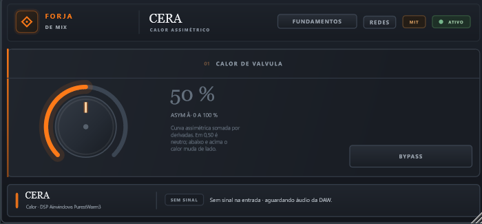
CALOR ASSIMÉTRICO
CERA derrete o sinal com uma curva assimétrica e devolve a diferença em derivadas: o resultado é calor de valvula sem perda de ataque. O ponto neutro é exatamente 0,50.
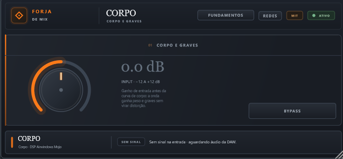
CORPO E GRAVES
CORPO é o ganho com forma: o Mojo empurra a onda para dentro de uma curva que engorda o sinal, dando peso e graves sem a aspereza de um drive comum.
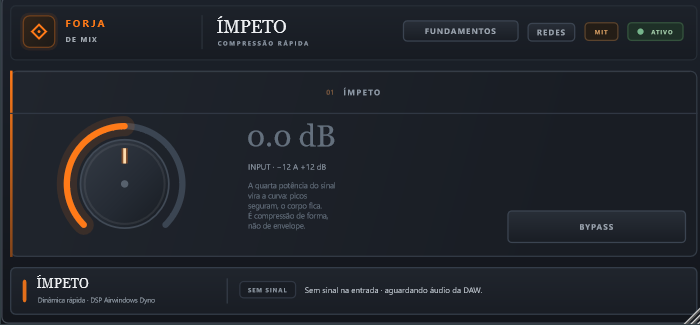
COMPRESSÃO RÁPIDA
ÍMPETO é compressão sem envelope: a quarta potência do sinal vira a própria curva, então o pico é dobrado para dentro instantaneamente, sem ataque, release ou detector.
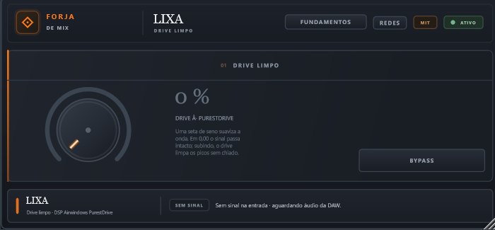
DRIVE LIMPO
LIXA é o drive de um só controle que não vira distorção: uma curva de seno arredonda os picos e a quantidade aplicada acompanha o próprio sinal. Serve para limpar transientes e dar cola sem chiado.
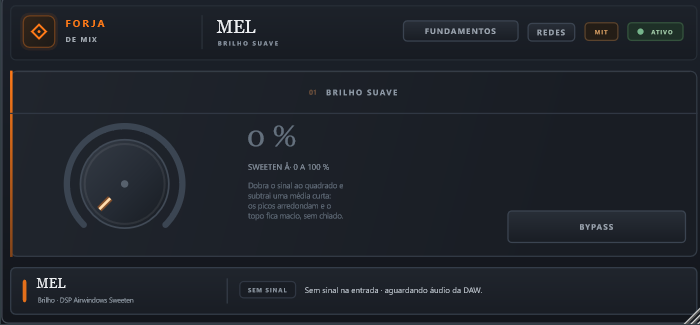
BRILHO SUAVE
MEL é o adoçador de topo: uma média curta do sinal ao quadrado é subtraída da entrada, arredondando picos e amaciar os agudos sem injetar harmônicos de exciter.
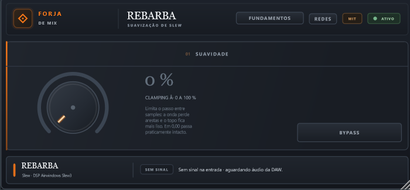
SUAVIZAÇÃO DE SLEW
REBARBA lima as arestas da onda: um preditor de três amostras estima o próximo passo e o limitador corta o que passa do limite. É o removedor de rebarba do sinal digital.
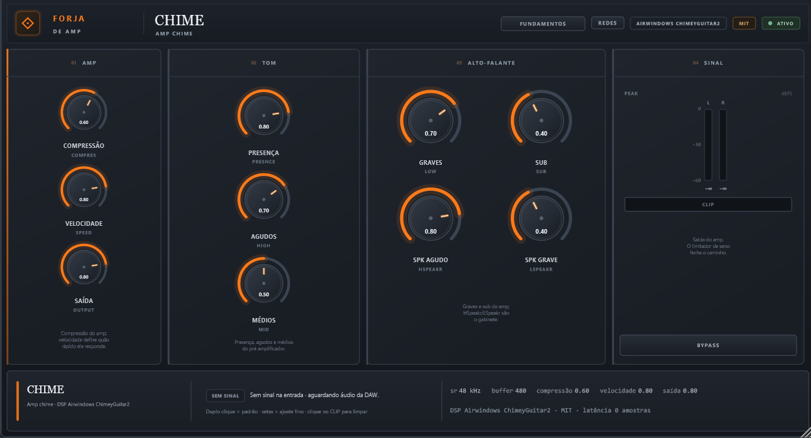
AMP CHIME
CHIME é o amp comprimido da família: cada banda tem seu próprio seguidor de envelope, então o ataque abre o som e o corpo sustenta. Serve para guitarras que precisam brilhar sem gritar.
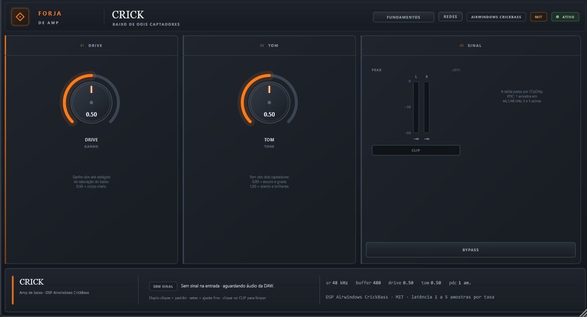
BAIXO DE DOIS CAPTADORES
CRICK é um amp de baixo com dois caminhos de captador: o canal esquerdo e o direito passam por estágios de saturação e gabinetes diferentes, como um baixo com dois captadores no mesmo amp.
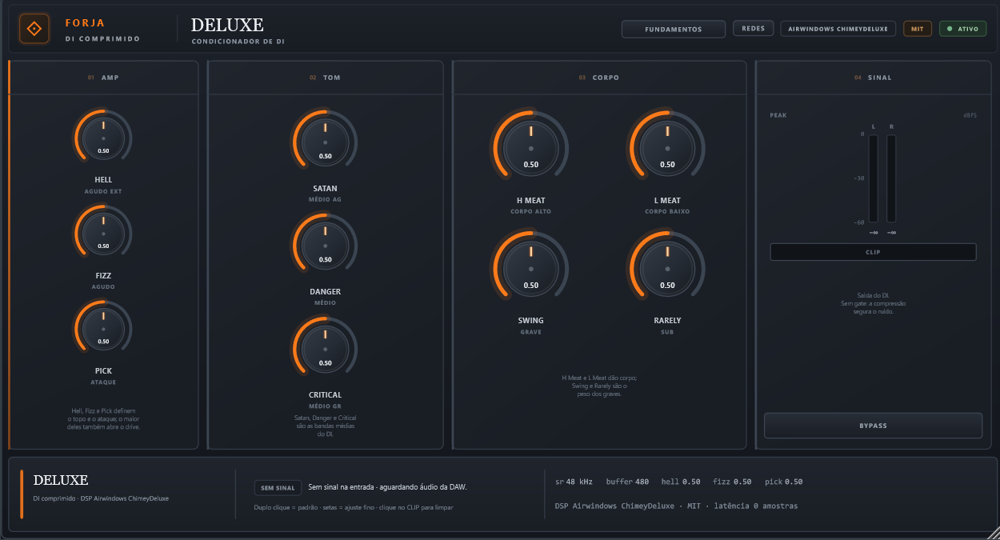
DI COMPRIMIDO
DELUXE é o DI da família: dez bandas fixas, dezesseis blocos de filtro em cascata e um seguidor de envelope por banda. O sinal sai comprimido, com ataque preservado e corpo no lugar.
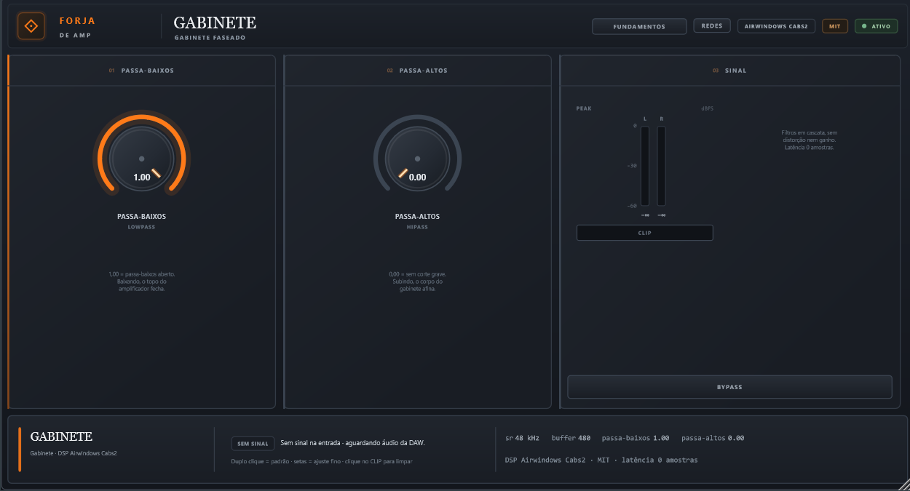
GABINETE FASEADO
GABINETE é a cor do alto-falante sem distorção: dois filtros em cascata que fecham o topo e afinam o corpo, como um cone real em um recinto. Serve a guitarra, baixo ou voz.
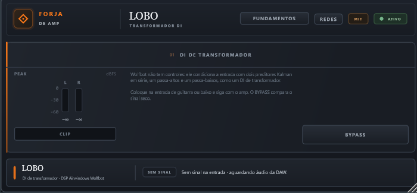
TRANSFORMADOR DI
LOBO é um DI de transformador sem controles: dois preditores Kalman em série limpam e dão corpo ao sinal antes do amp, como um transformador de entrada bem escolhido.
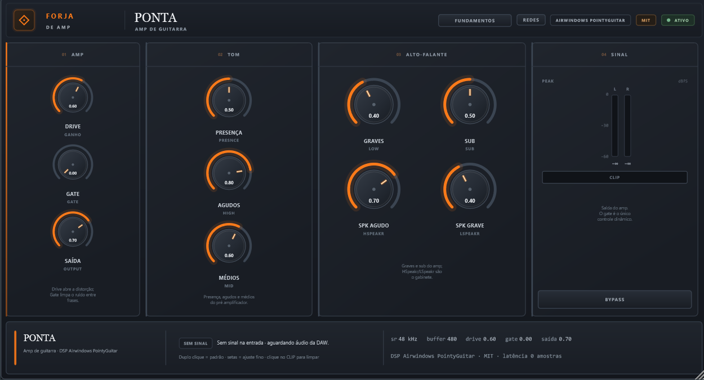
AMP DE GUITARRA
PONTA é um amp de guitarra completo em um só plugin: pré com distorção, equalização de três bandas, gabinete e gate. Do sinal de entrada ao cone, sem pedais.
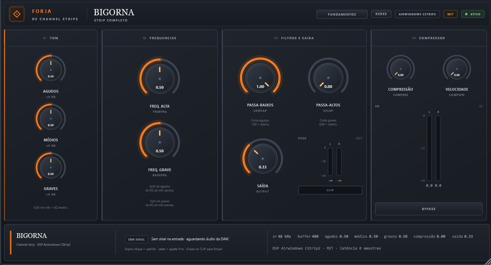
CHANNEL STRIP COMPLETO
A bigorna molda a peça inteira: EQ de três bandas, filtros, compressor e uma saída que também aquece. Um strip, um caminho.
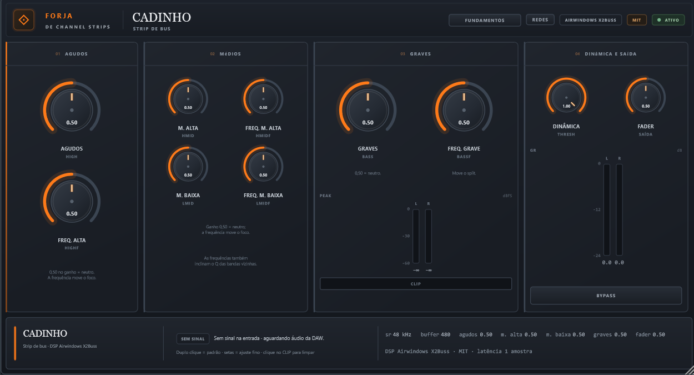
STRIP DE BUS
No cadinho o metal se mistura: quatro bandas entrelaçadas, compressão de bandas e ClipOnly3 na saída. Feito para bus e master.